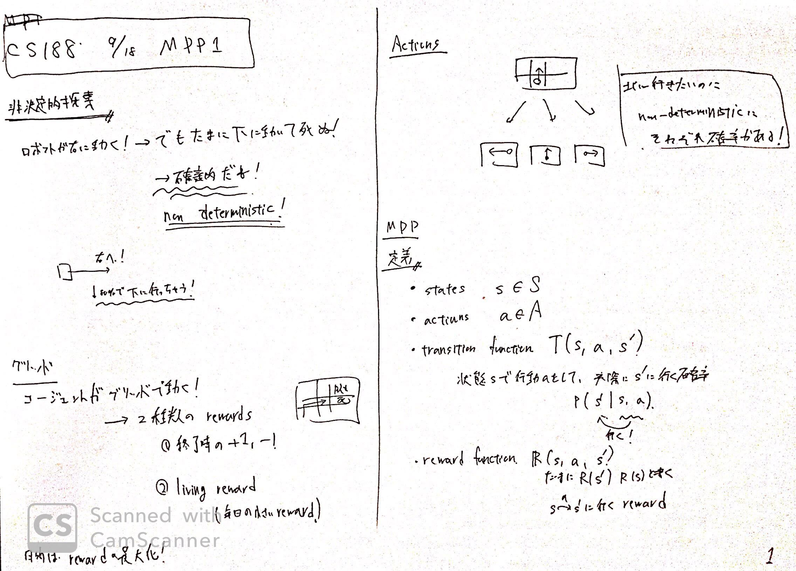
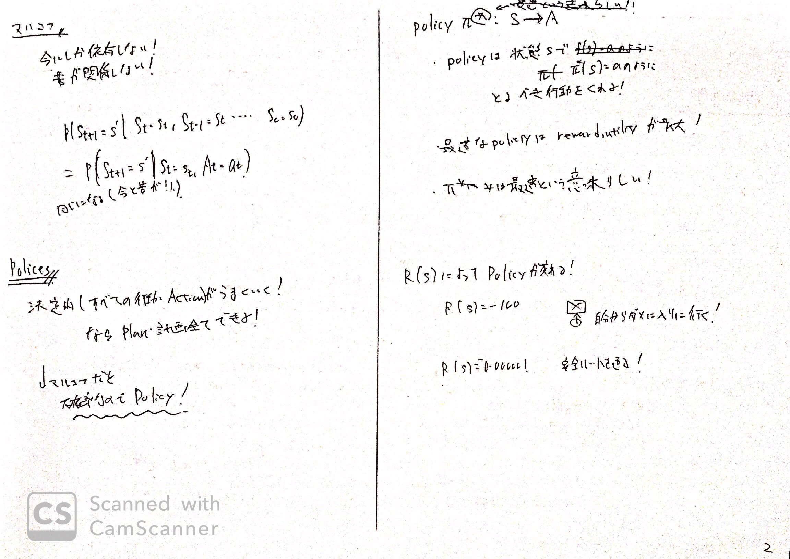
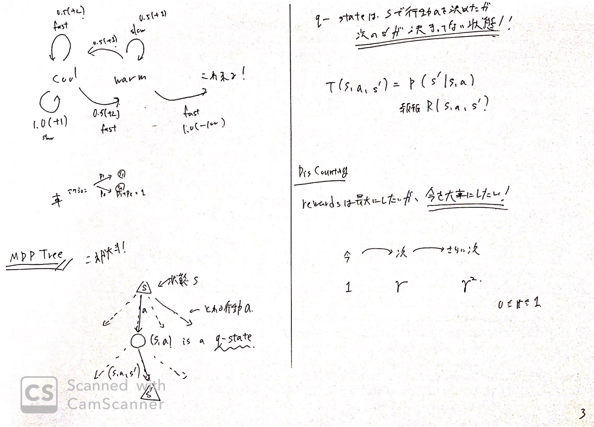
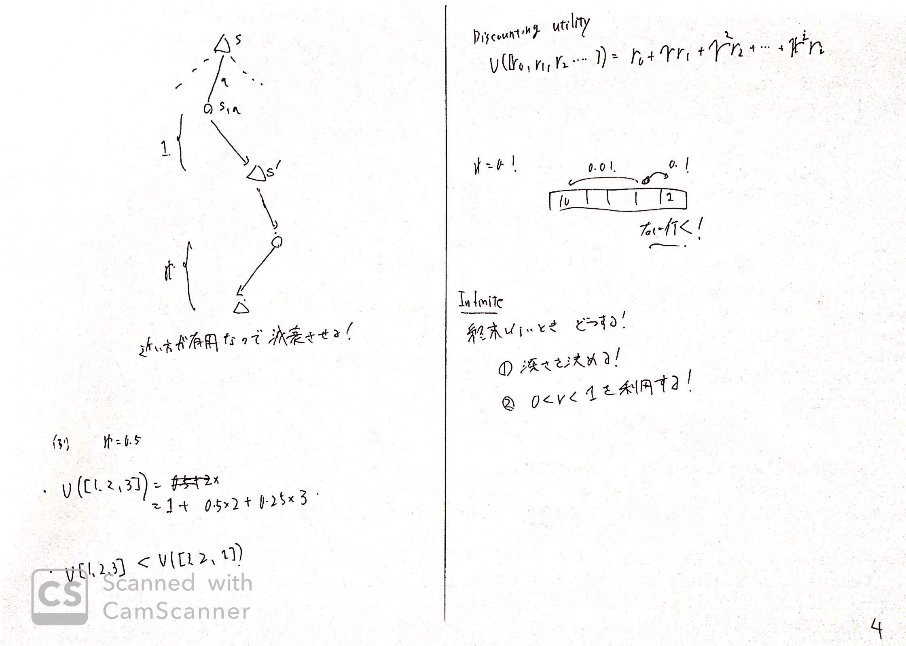
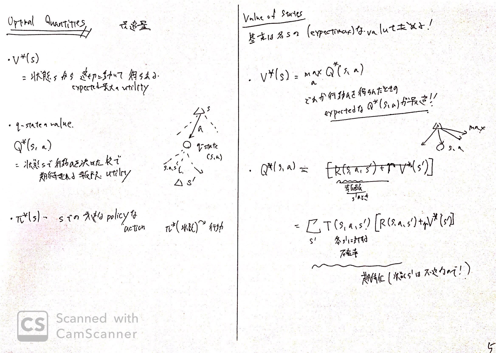
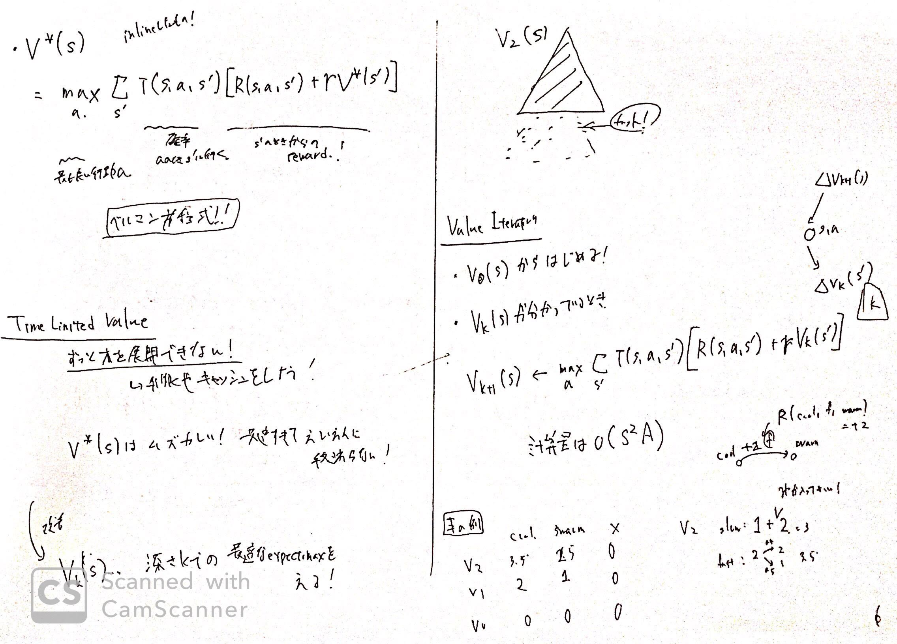

リンク
https://www.youtube.com/watch?v=4LW3H_Jinr4
https://inst.eecs.berkeley.edu/~cs188/fa18/
https://inst.eecs.berkeley.edu/~cs188/fa18/assets/slides/lec8/FA18_cs188_lecture8_MDPs_I_1pp.pdf
画像






内容
非決定的探索
これまで扱った探索は、決定的であり、思った行動が必ず取れていた。
しかし、現実は思った行動が失敗したり、ロボットは動かないこともある。
よって、確率的に探索を行う、非決定的探索を扱う。
グリッド
グリッド状でロボットが動くことを考える。
ロボットは毎回の移動でliving reward、そしてゴールかpitで+1, -1のrewardを貰う。
Actions
ロボットはActionを各状態にそって、取ることができる。
しかし、必ず重い道理には行かず
上に行きたい！ としても 右に動くこともある。
これが非決定的である。
MDPの定義
- state $s \in S$
- actions $a \in A$
- transition function $T(s, a, s’)$
- 状態sから行動aを取る！と決めたあと、状態s’に動く確率
- 必ずs’に行くわけではないため
- つまり$P(s’ | s, a)$である
- reward function $R(s, a, s’)$
- たまにR(s’), R(s)と書いたりする
マルコフ
マルコフは有名な人。
言っていることは、今これから起こることは昔に依存しない！ということ。
$P(S_{t+1} = s’ | S_t = s_t, S_{t-1}=s_{t-1}…)$
$= P(S_{t+1}=s’)$
となる。
過去に依存しない。
Policy
決定的ならば、探索の深さ内なら（すべて探索すると計算量がひどいため）
自由に行動できる。
しかし、非決定的のため、Policy（方針）に従って行動することにする。
$policy \ \pi^{*}: S \to A$
policyは上記のように$\pi$を用いて表され、状態集合$S$から、行動への写像を行う関数である。
最適なPolicyはexpected rewardが最大であり、そのようなPolicyには*をつけて表す。
各状態によって、取るべき行動がPolicyが定まることで一意に決まる。
MDP Tree
MDPをわかりやすく表すTree.
詳しくは画像参照。
現在の状態$s$では、複数の行動$a$を取ることができる。
ここで、取った状態を$q = (s, a)$とする。（つまり行動$a$を決めたとき）
しかし、行動$a$を取るとしても行き先の状態$s’$は固定ではない。ミスをしたりするからである。
よって、その遷移を$T(s, a, s’)$と表す。
画像では丸がq-state、三角が状態である。
Discounting
できる限り今の報酬を大きい影響力を持たせるために（遠い未来は確実性がないため）
遠い未来には割引率$\gamma$を累乗する。
このガンマは、現実世界に適用しており、数学的に扱いやすい。
Optimal Quantities(最適量)
MDPによる行動を決めるために必要な変数を記す。
- $V^{*}(s)$
- 状態$s$から最適な行動$a$を選ぶことで得られる最大のreward, utility
- $Q^{*}(s, a)$
- 状態$s$から行動$a$を行うと決めたあとで、最適な行動をしたときに得られる最大の期待値reward, utility
- $\pi^{*}(s)$
- sで行うべき行動を返す関数
Value of States
各状態のValueを計算する。
このValueを利用して、Policyが定まるらしい
$V^{*}(s) = \max_{a} Q(s, a)$
状態sの価値は、sから行動aを選んで得られる最大のq-stateの価値である。
$Q^{*}(s, a) = \sum_{s’} T(s, a, s’)[R(s, a, s’) + \gamma V^{*}(s’)]$
q-stateの価値は、行動aを行って確率的にs’にいくため、その遷移確率と価値をかけて期待値を求める。
また、内部の価値はこのT(s, a, s’)で得られるliving rewardと 割り引かれた状態$s’$の価値の和になる。
この２つの式をくっつけることができる。
Time Limited Value
このVの計算が永遠に木が続いて計算できないことがある。
そこで、深さ$k$を定めて、そのときの最大の価値を求める。
これによって、計算量が改善される。
$V_k(s)$は深さ$k$での最適なmaxを考える。
これを求めるには以下の手順を踏む。
- $V_0(s)$をまず0にする
- $V_{k+1}(s) = \max_a \sum_{s’} T(s, a, s’)[R(s, a, s’) + \gamma V_{k}(s)]$をボトムアップに計算する。
ただし、実際は再帰関数などでトップダウンに実装する
（内部的にはボトムアップになる）